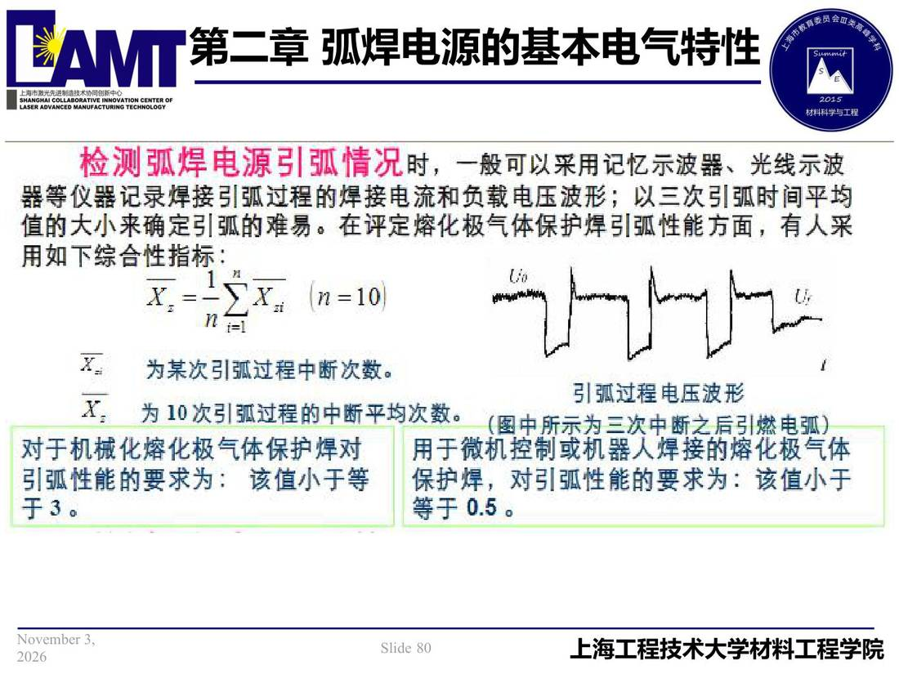

02 第2章 基本电气特性/p080 检测弧焊电源引弧情况时
p080 检测弧焊电源引弧情况时
📄 原文：📄 弧焊电源 课件（PDF 第 80 页）（幻灯片 80/273；PDF 第 80 页）
检测弧焊电源引弧情况时

讲义原文
本页在课件中是纯图文版式（无文字层），内容以页图与下面的 OCR 文本为准。
页面文字（OCR 机读，可能有错字，以页图为准）
检测弧焊电源引弧情况时，一般可以采用记忆示波、光线示波 噐等仪记录焊接引弧过程的焊接电流和负载电压波形；以三次引弧时间平均 值的大小来确定引弧的难易。在评定熔化极气体保护焊引弧性能方面，有人采 用如下综合性指标： X.= M=10 i=1 为某次引弧过程中断次数。 为10次引弧过程的中断平均次数。 对于机械化熔化极气体保护焊对 引弧性能的要求为：该值小于等 引弧过程电压波形 （图中所示为三次中断之后引燃电弧） 用于微机控制或机噐人焊接的熔化极气体